<div style="background-image: url('water/back.png');background-repeat: no-repeat;background-attachment: fixed;background-size: 100% 100%;background-blend-mode: lighten;background-color: rgba(255,255,255,0.5);">
	<div style="margin:20;text-align: left;">
		<div>
			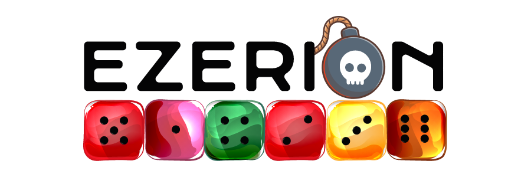
		</div>
		<div id="main">
			<div class="main-area"><!-- END main #content -->
				<p><h2>What Is Ezerion?</h2></p>
				<p>There are different universes and levels in this game. A beginner player starts with the water universe. For all the levels, there are different playing fields with different difficulty levels.  Every player plays with their colored squares by clicking them.</p>
				<p>Numbers on the dices shows how many clicks they have got. These numbers can rise up to the number of the dices neighbour squares (up, down, left and right spaces). If the player clicks one more time after the dice reach the highest number it can get, the dice burst and spreads, it gives neighbour squares the value of number one also the players color. As a result, the dices spread in the playing field increasingly. If there aren’t any opponents dices in the playing field, you win the game. However if there aren’t any of your dices in the playing field, your opponent wins.</p>

				<p><h2>Objects In The Game</h2></p>
				<p><h3>The Bombs</h3></p>
				<p>There are two types of bombs. The bombs are situated inside the game in different places and they explode once you conquer that square. The Bomb Types:</p>
				<p><b>Dynamites:</b></br>
				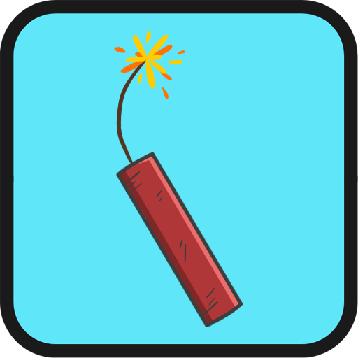
				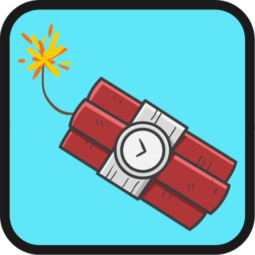
				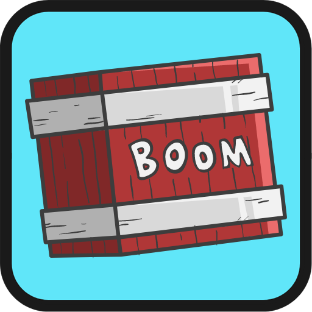</br>
				 The size of the dynamite indicates its explosive strength. In order, starting from the picture on the left; the bomb bursts and spreads through one row around it and turns their color to the players color. The second, the bomb bursts and spreads through two rows around it and turns their color to the players color. The third, the bomb bursts and spreads through three rows around it and turns their color to the players color.</p>
				<p><b>The Bombs With Directions:</b></br>
				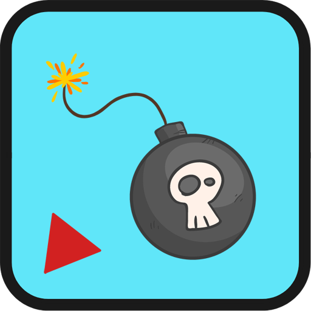
				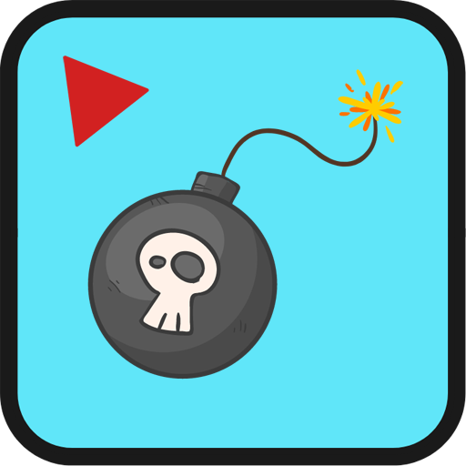
				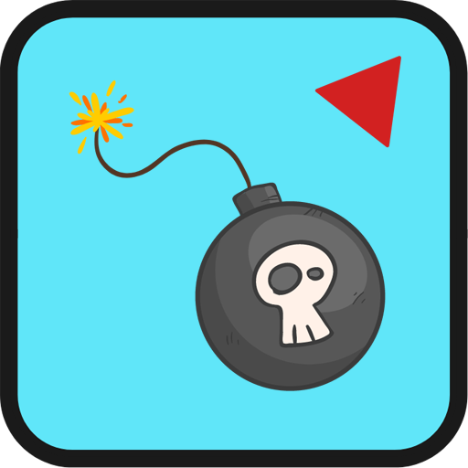
				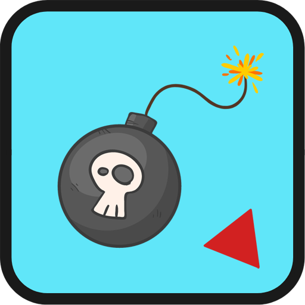
				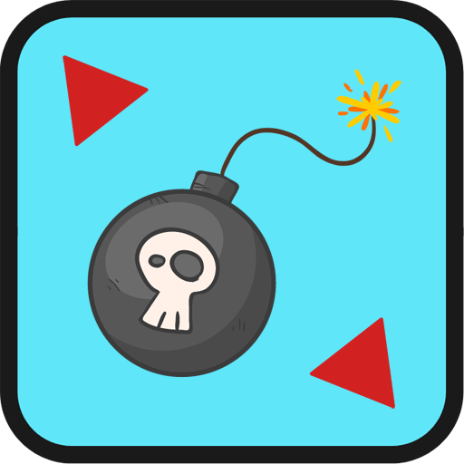
				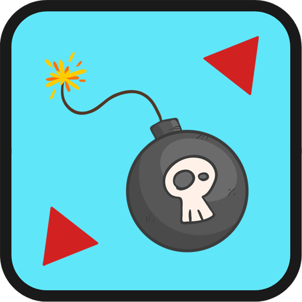</br>
				The direction next to the bomb shows the direction of the explosion when the bomb bursts. When these bombs bursts they turn the squares of the shown direction to the players color. This explosion can get through the spaces however it can not get through the walls.</p>
				<p><h3>Teleportation</h3></p>
				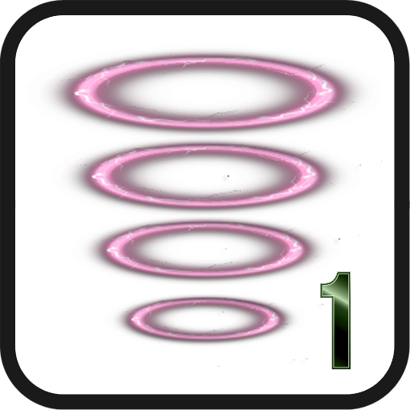
				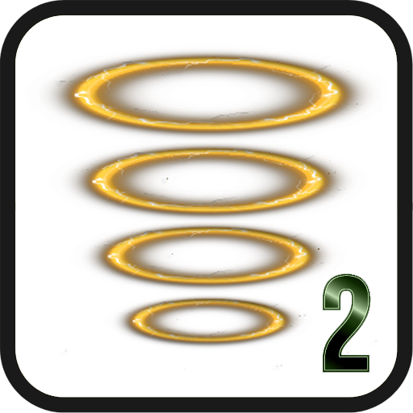
				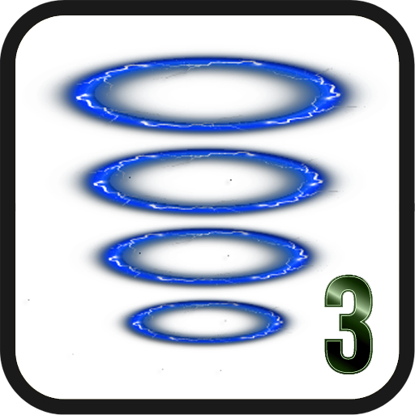
				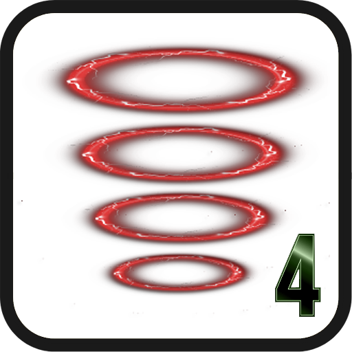
				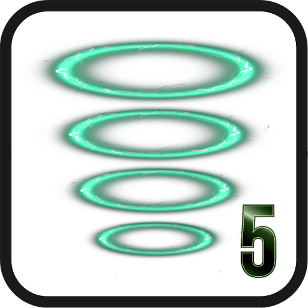
				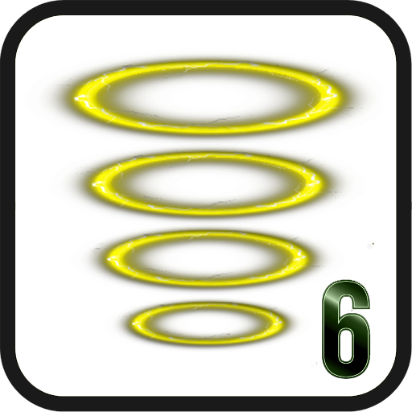
				<p>There are teleport points on the different parts of the map.  These teleport points are pairs, based on their colors.  When your dice reach to one of the teleport points, it can go to the other teleport point by the same color. This allows you to develop different strategies.</p>
				<p><h3>Walls</h3></p>
				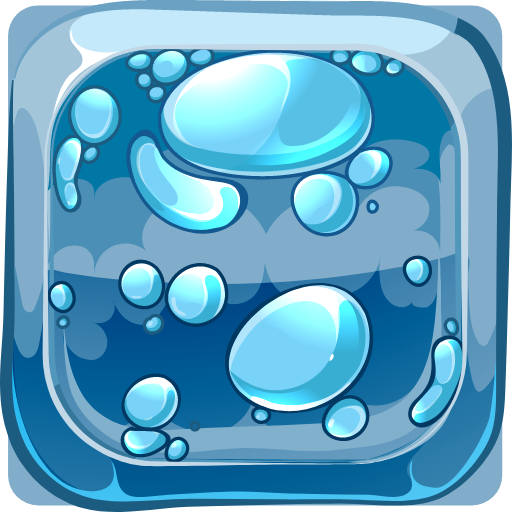
				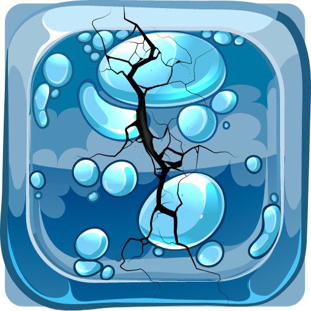
				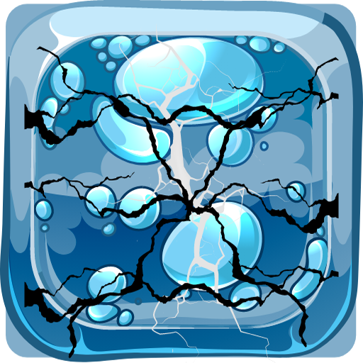
				<p>There are walls in different parts of the maps and to get past the walls you need to burst your dices near the walls so they break down. You need to make three moves to destroy a wall. For every move you make the wall will crack and finally break down. Don’t forget, your opponent will watch your every move! While you try to break down the wall, your opponent might get the upper hand.</p>
				<p><h3>Mines</h3></p>
				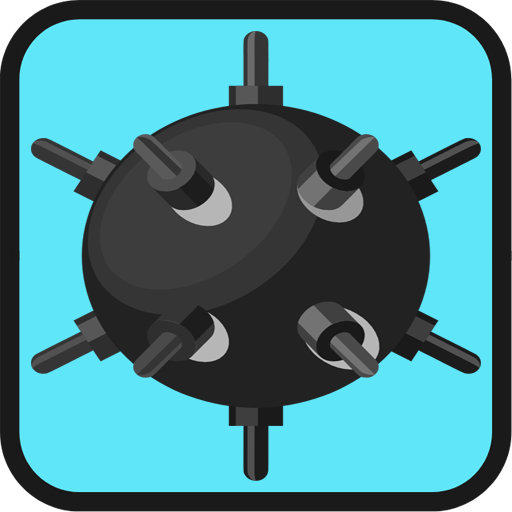
				<p>Mines are designed for keeping up your excitement and adrenalin level, they won’t help neither you nor your opponent unlike bombs. If you pop the mines inside the map, it won’t bring you new spaces, even it takes some of your space. When a mine get popped, it turns the squares around it unclaimed.</p>
			</div>
		</div>
		<div style="text-align:center;">
			<a href="https://www.instagram.com/qulvargamestudio"></a>
			<a href="https://www.twitter.com/qulvargames"></a>
			<a href="https://www.linkedin.com/company/qulvar-game-studio"></a>
			<a href="https://www.linkedin.com/company/qulvar-game-studio"></a>
		</div>
		</br></br>
		<div>
			
		</div>
	</div>
</div>
